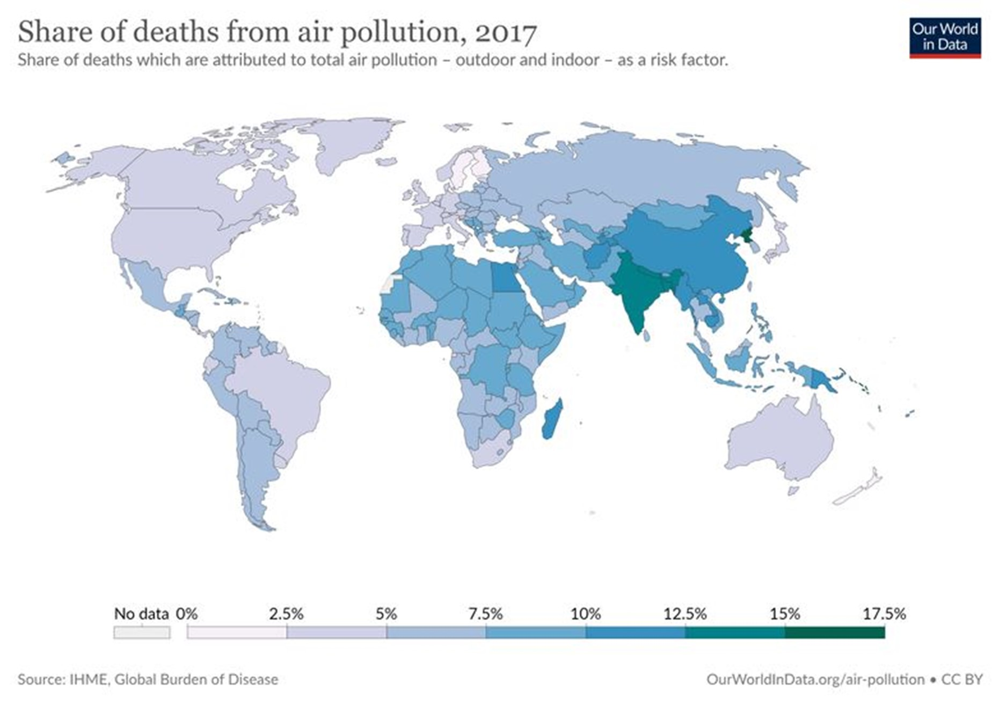
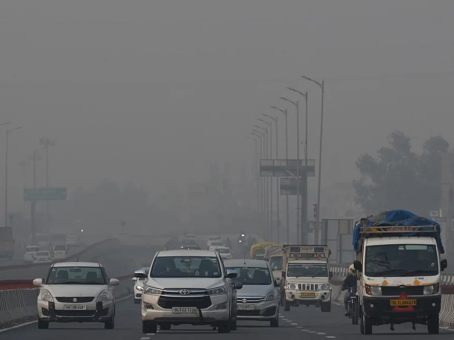

<article class="mb-4">
    <div class="container px-4 px-lg-5">
        <div class="row gx-4 gx-lg-5 justify-content-center">
            <div class="col-md-10 col-lg-8 col-xl-7" id="bodyP">
                <h2 class="section-heading">Air Pollution</h2>
                <a href="#!"></a>
                <span class="caption text-muted">Source: Earth.Org Drawn Up: The Biggest Environmental Problems of 2021: https://earth.org/drawn-up-biggest-environmental-problems-of-2021/</span>
                <p>Air pollution increases as countries develop, primarily from industrial and vehicular sources, but also from indoor fuel combustion. Pollution tends to build up in the early stages before legislation catches up and begins to reduce it. Africa is a prime example, with 258,000 people dying in 2017 as a result of outdoor air pollution.</p>
                <p>As a result of its rapid development, China has had a very polluted period in the last four decades, but it has made significant progress in the last decade, and India remains in a critical state, with routine polluted air in its densely populated cities and areas affecting millions of people every day.</p>
                <a href="#!"></a>
                <span class="caption text-muted">Source: Earth.Org Drawn Up: The Biggest Environmental Problems of 2021: https://earth.org/drawn-up-biggest-environmental-problems-of-2021/</span>

                <h2 class="section-heading">Countrywide Effects</h2>
                <p>Due to how polluted some countries are, the effects of air pollution on those countries are devastating.</p>
                <a href="#!"></a>
                <p>
                    One example is India. lack of pollution control in India has caused India to have not only the world's worst air pollution but also one of the most polluted countries in the world.
                    Adding on the fact that India is the planet's second-most populous country and also has one of the fastest-growing populations in the world, the number of deaths related to air pollution has skyrocketed over the years as the air quality deteriorates rapidly. It is estimated in 2019, 1.67 million deaths were related to toxic air. This number accounts for 18% of all fatalities.
                </p>
                <p>Recently in Nov of 2021, the air pollution in New Delhi, one of the heaviest air polluted cities in India, has worsened to the point where a lockdown was necessary. Schools in Delhi closed for a week, private offices and construction have been halted as well.</p>
                <p>This is a prime example of how air pollution can affect a country. As the country goes into lockdown, people's ability to work has been reduced which slows the economy. Essential services and distribution of necessities could also be halted which disrupts the functions of society. Additionally, toxic air can damage buildings including cultural and historical landmarks. Restoration structures and essential services can cost a lot of money which could be a massive setback to a country's economy. Tourism is affected as well. Tourists will be less inclined to visit a country if air pollution and popular tourist attractions are damaged. The list of damages goes on and on.</p>

                <h2 class="section-heading">Effects on the human body</h2>
                <p>
                    Exposure to high levels of air pollution can cause a variety of adverse health outcomes. It increases the risk of respiratory infections, heart disease and lung
                    cancer. Young children and older adults are especially vulnerable as their immune system tends to be weaker.
                </p>
                <p>
                    Strokes, dementia and reduced intelligence are all conditions affecting the brain that have been linked to air pollution. There is also evidence that poor sleep
                    can be a consequence of breathing toxic air. Perhaps the most disturbing impact of toxic air is the damage to reproduction and children. Fertility is reduced
                    and miscarriages increased by exposure to air pollution. Exposure to dirty air leads to stunted lungs, increases in childhood obesity, leukemia and mental health problems.
                </p>

                <h2 class="section-heading">What can we do to help?</h2>
                <p><span style="font-weight:bold">Take public transport, walk or cycle whenever possible. </span>Using public transport reduces the release of harmful gases that contribute to air pollution. Plus, it helps to save money. Walking and cycling is even better! No pollutants are released into the air and it acts as a form of excersise as well.</p>
                <p><span style="font-weight:bold">Conserve energy. </span>Conserve energy. To get energy, fossil fuels are burnt which produces pollutants into the air. By reducing energy used, the amount of fossil fuels burnt is reduced and pollutants released is reduced as well. We can start by turning off lights when not in use or opting to use energy-saving bulbs. Additionally, using fans instead of air conditioners helps as well. </p>
                <a href="#!"></a>
                <p><span style="font-weight:bold">Support clean air legislations. </span>By supporting relevant acts that make positive changes in the environment, you are also playing your part in contributing to the betterment of air quality.</p>
                <!--<p>Individuals can help by walking, cycling, or taking public transportation instead of driving whenever possible. Individuals can also use mobile phone air quality index apps to track pollution in real time and choose healthier routes for themselves and others.</p> -->
            </div>
        </div>
    </div>
</article>